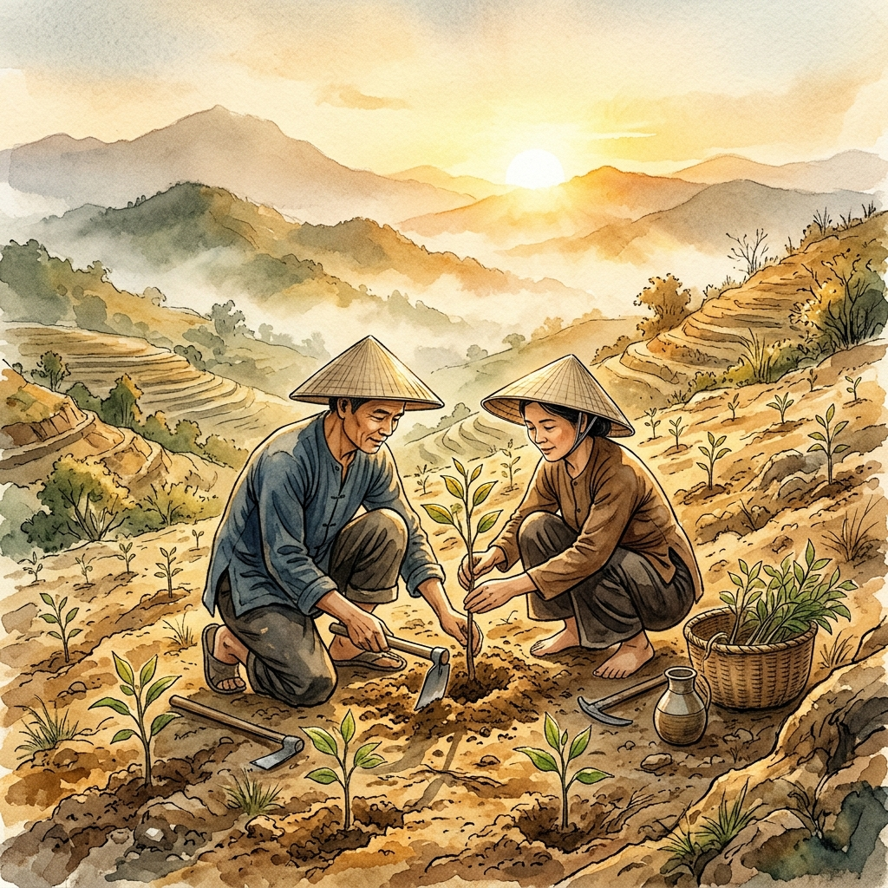
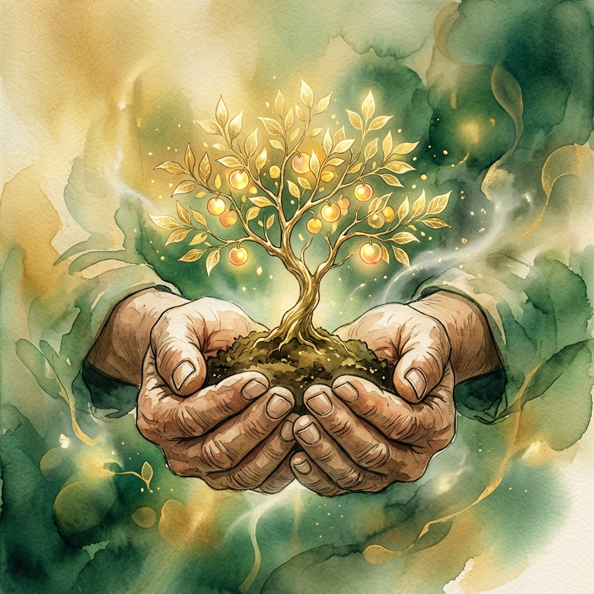
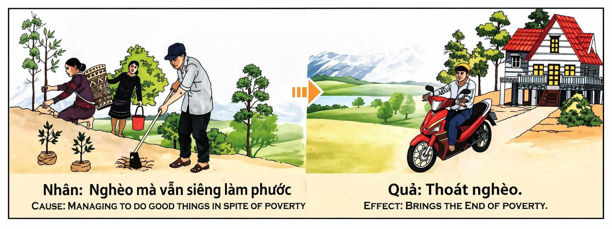

La Riqueza Sembrada en la Escasez Wealth Sown in Scarcity La Ricchezza Seminata nella Scarsità 匮乏中播下的财富 الثروة المزروعة في الشح Богатство, посеянное в нужде Reichtum, gesät im Mangel La Richesse Semée dans la Pénurie 欠乏の中に蒔かれた富 A Riqueza Semeada na Escassez Sự Giàu Có Gieo Trong Cảnh Nghèo Khó
"Quien siembra amor en la tierra de la carencia, cosecha milagros en el jardín de la abundancia." "He who sows love in the land of lack, harvests miracles in the garden of abundance." "Chi semina amore nella terra della carenza, raccoglie miracoli nel giardino dell'abbondanza." “在匮乏之土播种爱的人，必在丰盛之园收获奇迹。” "من يزرع الحب في أرض العوز، يحصد المعجزات في بستان الوفرة." «Кто сеет любовь в земле нужды, тот пожинает чудеса в саду изобилия». „Wer Liebe im Land des Mangels sät, erntet Wunder im Garten des Überflusses.“ « Celui qui sème l'amour sur la terre du manque, récolte des miracles dans le jardin de l'abondance. » 「欠乏の地に愛を蒔く者は、豊穣の庭で奇跡を収穫する。」 "Quem semeia amor na terra da carência, colhe milagres no jardim da abundância." "Kẻ gieo tình thương trên mảnh đất nghèo khó sẽ gặt hái phép màu trong khu vườn của sự sung túc."
El karma no mide la cantidad de lo que damos, sino el tamaño del corazón que se desprende de ello. Dar cuando sobra es un acto de bondad, pero dar cuando se carece es un acto de santidad que sacude los cimientos del universo. La ley de causa y efecto no es una suma matemática de bienes, sino una resonancia de la intención pura; el mérito se multiplica exponencialmente cuando el donante ofrece su propia necesidad como semilla para el bienestar ajeno.
La escasez no es una barrera para crear mérito, sino una oportunidad para que el mérito sea infinito. El esfuerzo por ayudar a otros mientras uno mismo lucha por sobrevivir genera una vibración de abundancia tan potente que el universo no tiene más remedio que responder transformando la realidad material. Es el mecanismo del "vaso medio lleno": si decides compartir tu mitad con quien no tiene nada, el universo reconoce que eres un canal digno de recibir un océano, rompiendo así las cadenas kármicas de la pobreza estructural.
El "antes" de este karma es una vida de carencias donde el individuo decide, a pesar de todo, ser un canal de luz y diligencia. El "después" es la prosperidad que nace no por azar ni por simple trabajo físico, sino como el fruto maduro de una semilla plantada con sudor, sacrificio y una fe inquebrantable en la ley del dar. Para alinear nuestra vida con el Ikigai de la abundancia, debemos entender que nunca somos tan pobres que no tengamos nada que ofrecer, pues la palabra de aliento o el esfuerzo compartido son las monedas más valiosas en la economía del espíritu.
Karma does not measure the amount of what we give, but the size of the heart that lets go of it. Giving when there is plenty is an act of kindness, but giving when one is in need is an act of holiness that shakes the foundations of the universe. The law of cause and effect is not a mathematical sum of goods, but a resonance of pure intention; merit multiplies exponentially when the giver offers their own need as a seed for the well-being of others.
Scarcity is not a barrier to creating merit, but an opportunity for merit to be infinite. The effort to help others while one is struggling to survive generates a vibration of abundance so potent that the universe has no choice but to respond by transforming material reality. It is the "half-full glass" mechanism: if you decide to share your half with someone who has nothing, the universe recognizes that you are a channel worthy of receiving an ocean, thus breaking the karmic chains of structural poverty.
The "before" of this karma is a life of lack where the individual decides, despite everything, to be a channel of light and diligence. The "after" is the prosperity that is born not by chance or by simple physical work, but as the mature fruit of a seed planted with sweat, sacrifice, and unwavering faith in the law of giving. To align our lives with the Ikigai of abundance, we must understand that we are never so poor that we have nothing to offer, for a word of encouragement or a shared effort are the most valuable currencies in the economy of the spirit.
Il karma non misura la quantità di ciò che diamo, ma la grandezza del cuore che se ne priva. Dare quando c'è abbondanza è un atto di gentilezza, ma dare quando si è nel bisogno è un atto di santità che scuote le fondamenta dell'universo. La legge di causa ed effetto non è una somma matematica di beni, ma una risonanza di pura intenzione; il merito si moltiplica esponenzialmente quando il donatore offre il proprio bisogno come seme per il benessere altrui.
La scarsità non è una barriera alla creazione del merito, ma un'opportunità affinché il merito sia infinito. Lo sforzo di aiutare gli altri mentre si lotta per sopravvivere genera una vibrazione di abbondanza così potente che l'universo non ha altra scelta se non quella di rispondere trasformando la realtà materiale. È il meccanismo del "bicchiere mezzo pieno": se decidi di condividere la tua metà con chi non ha nulla, l'universo riconosce che sei un canale degno di ricevere un oceano, rompendo così le catene karmiche della povertà strutturale.
Il "prima" di questo karma è una vita di mancanze dove l'individuo decide, nonostante tutto, di essere un canale di luce e diligenza. Il "dopo" è la prosperità che nasce non per caso o per semplice lavoro fisico, ma come frutto maturo di un seme piantato con sudore, sacrificio e una fede incrollabile nella legge del dare. Per allineare la nostra vita con l'Ikigai dell'abbondanza, dobbiamo capire che non siamo mai così poveri da non avere nulla da offrire, poiché una parola di incoraggiamento o uno sforzo condiviso sono le valute più preziose nell'economia dello spirito.
业力衡量的不是我们施予的数量，而是那颗舍弃它的心的大小。在充裕时施予是善良之举，但在匮乏时施予则是撼动宇宙根基的神圣之举。因果法则不是物质财富的数学加总，而是纯真意图的共鸣；当施予者将自己的需求作为他人福祉的种子献出时，功德便呈指数级增长。
匮乏不是创造功德的障碍，而是让功德变得无限的机会。在挣扎求存的同时努力帮助他人，会产生一种如此强大的丰盛振动，以至于宇宙别无选择，只能通过转化物质现实来回应。这就是“半杯水”机制：如果你决定与一无所有的人分享你的一半，宇宙就会认定你是一个值得承载海洋的渠道，从而打破结构性贫困的业力枷锁。
这种业力的“前因”是匮乏的生活，个体尽管面临一切，仍决定成为光与勤勉的渠道。而“后果”则是繁荣，它并非偶然产生，也不仅仅源于简单的体力劳动，而是那颗带着汗水、牺牲和对施予法则坚定信念所播下的种子的成熟果实。为了让我们的生活与丰盛的“伊基盖”（Ikigai）保持一致，我们必须明白，我们永远不会穷到一无所有，因为一句鼓励的话或一次共同的努力都是灵魂经济中最宝贵的货币。
الكارما لا تقيس كمية ما نعطيه، بل حجم القلب الذي يتخلى عنه. العطاء عند الوفرة هو عمل من أعمال اللطف، لكن العطاء عند الحاجة هو عمل من أعمال القداسة التي تهز أركان الكون. قانون السبب والنتيجة ليس جمعاً رياضياً للخيرات، بل هو رنين للنية الصافية؛ يتضاعف الاستحقاق أضعافاً مضاعفة عندما يقدم المعطي حاجته الخاصة كبذرة لرفاهية الآخرين.
الشح ليس عائقاً أمام خلق الاستحقاق، بل هو فرصة ليكون الاستحقاق غير محدود. إن الجهد المبذول لمساعدة الآخرين بينما يكافح المرء من أجل البقاء يولد ذبذبات من الوفرة قوية لدرجة أن الكون ليس لديه خيار سوى الاستجابة من خلال تحويل الواقع المادي. إنها آلية "الكوب نصف الممتلئ": إذا قررت مشاركة نصفك مع من لا يملك شيئاً، يدرك الكون أنك قناة تستحق استقبال محيط، وبذلك تحطم القيود الكارمية للفقر الهيكلي.
"ما قبل" هذه الكارما هو حياة من العوز حيث يقرر الفرد، رغم كل شيء، أن يكون قناة للنور والاجتهاد. أما "ما بعد" فهو الازدهار الذي لا يولد بالصدفة أو بالعمل البدني البسيط، بل كالثمرة الناضجة لبذرة زرعت بالعرق والتضحية والإيمان الراسخ بقانون العطاء. لكي نوجه حياتنا نحو الـ "إيكيغاي" الخاص بالوفرة، يجب أن نفهم أننا لسنا فقراء أبداً لدرجة ألا نملك شيئاً نقدمه، لأن كلمة تشجيع أو جهداً مشتركاً هما أثمن العملات في اقتصاد الروح.
Карма измеряет не количество того, что мы отдаем, а размер сердца, которое с этим расстается. Давать в изобилии — это акт доброты, но давать в нужде — это акт святости, который сотрясает основы Вселенной. Закон причины и следствия — это не математическая сумма благ, а резонанс чистого намерения; заслуга умножается экспоненциально, когда дающий приносит свою собственную нужду в качестве семени для благополучия других.
Скудость — это не преграда для создания заслуг, а возможность сделать их бесконечными. Усилия по оказанию помощи другим, когда сам борешься за выживание, порождают вибрацию изобилия настолько мощную, что у Вселенной нет иного выбора, кроме как ответить трансформацией материальной реальности. Это механизм «наполовину полного стакана»: если вы решите поделиться своей половиной с тем, у кого ничего нет, Вселенная признает, что вы достойны принять океан, разрывая тем самым кармические цепи структурной бедности.
Состояние «до» этой кармы — это жизнь в лишениях, где человек, вопреки всему, решает стать проводником света и усердия. Состояние «после» — это процветание, которое рождается не случайно и не просто благодаря физическому труду, а как зрелый плод семени, посаженного с потом, жертвой и непоколебимой верой в закон даяния. Чтобы привести нашу жизнь в соответствие с Икигай изобилия, мы должны понять, что никогда не бываем настолько бедны, чтобы нам нечего было предложить, ибо слово ободрения или общие усилия — самые ценные валюты в экономике духа.
Karma misst nicht die Menge dessen, was wir geben, sondern die Größe des Herzens, das sich davon trennt. Zu geben, wenn Überfluss herrscht, ist ein Akt der Güte, aber zu geben, wenn man selbst im Mangel lebt, ist ein Akt der Heiligkeit, der die Grundfesten des Universums erschüttert. Das Gesetz von Ursache und Wirkung ist keine mathematische Summe von Gütern, sondern eine Resonanz reiner Absicht; das Verdienst vervielfacht sich exponentiell, wenn der Schenkende sein eigenes Bedürfnis als Samen für das Wohlergehen anderer anbietet.
Mangel ist kein Hindernis für die Schaffung von Verdiensten, sondern eine Chance, dass das Verdienst unendlich wird. Die Anstrengung, anderen zu helfen, während man selbst um das Überleben kämpft, erzeugt eine so gewaltige Schwingung des Überflusses, dass das Universum keine andere Wahl hat, als mit der Transformation der materiellen Realität zu antworten. Es ist der Mechanismus des „halbvollen Glases“: Wenn du dich entscheidest, deine Hälfte mit jemandem zu teilen, der nichts hat, erkennt das Universum, dass du ein Kanal bist, der es verdient, einen Ozean zu empfangen, und bricht so die karmischen Ketten der strukturellen Armut.
Das „Vorher“ dieses Karmas ist ein Leben der Entbehrung, in dem der Einzelne beschließt, trotz allem ein Kanal für Licht und Fleiß zu sein. Das „Nachher“ ist der Wohlstand, der nicht durch Zufall oder einfache körperliche Arbeit entsteht, sondern als reife Frucht eines Samens, der mit Schweiß, Opfern und unerschütterlichem Glauben an das Gesetz des Gebens gepflanzt wurde. Um unser Leben mit dem Ikigai des Überflusses in Einklang zu bringen, müssen wir verstehen, dass wir niemals so arm sind, dass wir nichts zu bieten haben, denn ein Wort der Ermutigung oder eine gemeinsame Anstrengung sind die wertvollsten Währungen in der Ökonomie des Geistes.
Le karma ne mesure pas la quantité de ce que nous donnons, mais la taille du cœur qui s'en détache. Donner quand on a en abondance est un acte de bonté, mais donner quand on manque de tout est un acte de sainteté qui ébranle les fondements de l'univers. La loi de cause à effet n'est pas une somme mathématique de biens, mais une résonance d'intention pure ; le mérite se multiplie de manière exponentielle lorsque le donateur offre son propre besoin comme semence pour le bien-être d'autrui.
La pénurie n'est pas une barrière à la création de mérite, mais une opportunité pour que le mérite soit infini. L'effort pour aider les autres alors que l'on lutte soi-même pour survivre génère une vibration d'abondance si puissante que l'univers n'a d'autre choix que de répondre en transformant la réalité matérielle. C'est le mécanisme du « verre à moitié plein » : si vous décidez de partager votre moitié avec celui qui n'a rien, l'univers reconnaît que vous êtes un canal digne de recevoir un océan, brisant ainsi les chaînes karmiques de la pauvreté structurelle.
Le « avant » de ce karma est une vie de privations où l'individu décide, malgré tout, d'être un canal de lumière et de diligence. Le « après » est la prospérité qui naît non par hasard ou par simple travail physique, mais comme le fruit mûr d'une semence plantée avec sueur, sacrifice et une foi inébranlable dans la loi du don. Pour aligner notre vie avec l'Ikigai de l'abondance, nous devons comprendre que nous ne sommes jamais assez pauvres pour n'avoir rien à offrir, car une parole d'encouragement ou un effort partagé sont les monnaies les plus précieuses dans l'économie de l'esprit.
カルマは、私たちが与えるものの量ではなく、それを手放す心の大きさを測ります。余裕があるときに与えるのは親切ですが、欠乏しているときに与えるのは宇宙の根底を揺るがす聖なる行為です。原因と結果の法則は、財の数学的な合計ではなく、純粋な意図の響きです。与える側が自らの必要性を他者の幸福のための種として捧げるとき、徳（メリット）は飛躍的に増大します。
欠乏は徳を積むための障壁ではなく、徳を無限にするための機会です。自らが生き残るために苦労している最中に他者を助けようとする努力は、非常に強力な豊かさの振動を生み出し、宇宙は物質的現実を変容させることで応えざるを得なくなります。これは「半分満たされたコップ」のメカニズムです。もしあなたが自分の半分を何も持たない人と分かち合うと決めるなら、宇宙はあなたが大海を受け取るにふさわしい器であると認識し、構造的貧困のカルマの鎖を断ち切るのです。
このカルマの「前」は、あらゆる困難にもかかわらず、光と勤勉の通り道になることを決意する欠乏の人生です。「後」は、偶然や単純な肉体労働によってではなく、汗と犠牲、そして与える法則への揺るぎない信念を持って蒔かれた種の、成熟した果実として生まれる繁栄です。豊かさの「生きがい」（Ikigai）に人生を合わせるためには、励ましの言葉や共同の努力こそが精神の経済において最も価値のある通貨であり、私たちが何かを提供できないほど貧しいことは決してないのだと理解しなければなりません。
O karma não mede a quantidade do que damos, mas o tamanho do coração que se desprende disso. Dar quando sobra é um ato de bondade, mas dar quando se carece é um ato de santidade que abala os alicerces do universo. A lei de causa e efeito não é uma soma matemática de bens, mas uma ressonância da intenção pura; o mérito multiplica-se exponencialmente quando o doador oferece a sua própria necessidade como semente para o bem-estar alheio.
A escassez não é uma barreira para criar mérito, mas uma oportunidade para que o mérito seja infinito. O esforço para ajudar outros enquanto se luta para sobreviver gera uma vibração de abundância tão potente que o universo não tem outra escolha senão responder transformando a realidade material. É o mecanismo do "copo meio cheio": se decides partilhar a tua metade com quem não tem nada, o universo reconhece que és um canal digno de receber um oceano, quebrando assim as cadeias kármicas da pobreza estrutural.
O "antes" deste karma é uma vida de carências onde o indivíduo decide, apesar de tudo, ser um canal de luz e diligência. O "depois" é a prosperidade que nasce não por acaso ou por simples trabalho físico, mas como o fruto maduro de uma semente plantada com suor, sacrifício e uma fé inabalável na lei do dar. Para alinhar a nossa vida com o Ikigai da abundância, devemos entender que nunca somos tão pobres que não tenhamos nada a oferecer, pois a palavra de alento ou o esforço partilhado são as moedas mais valiosas na economia do espírito.
Nhân quả không đo lường số lượng những gì chúng ta cho đi, mà đo lường kích thước của trái tim khi buông bỏ nó. Cho đi khi dư dả là một hành động tử tế, nhưng cho đi khi đang túng thiếu là một hành động thánh thiện làm lung lay cả nền móng của vũ trụ. Luật nhân quả không phải là một phép cộng toán học của cải vật chất, mà là sự cộng hưởng của ý định thuần khiết; công đức sẽ nhân lên theo cấp số nhân khi người cho dâng hiến chính nhu cầu của mình như một hạt giống cho hạnh phúc của người khác.
Sự khan hiếm không phải là rào cản để tạo ra công đức, mà là cơ hội để công đức trở nên vô hạn. Nỗ lực giúp đỡ người khác trong khi chính mình đang đấu tranh để sinh tồn tạo ra một rung động của sự sung túc mạnh mẽ đến mức vũ trụ không còn lựa chọn nào khác ngoài việc đáp lại bằng cách biến đổi thực tại vật chất. Đó là cơ chế "chiếc cốc vơi một nửa": nếu bạn quyết định chia sẻ một nửa của mình với người không có gì, vũ trụ sẽ công nhận rằng bạn là một kênh xứng đáng để tiếp nhận cả đại dương, từ đó phá vỡ xiềng xích nghiệp lực của cái nghèo cơ cấu.
Cái "trước" của nghiệp này là một cuộc sống thiếu thốn, nơi cá nhân quyết định, bất chấp mọi thứ, trở thành một kênh dẫn của ánh sáng và sự siêng năng. Cái "sau" là sự thịnh vượng được sinh ra không phải do ngẫu nhiên hay chỉ bằng lao động chân tay đơn thuần, mà là thành quả chín muồi của một hạt giống được gieo bằng mồ hôi, sự hy sinh và niềm tin kiên định vào quy luật cho đi. Để điều chỉnh cuộc sống của chúng ta theo Ikigai của sự sung túc, chúng ta phải hiểu rằng không bao giờ chúng ta nghèo đến mức không có gì để cho đi, vì một lời khuyên bảo hay một nỗ lực sẻ chia là những đồng tiền quý giá nhất trong nền kinh tế của tâm linh.
Los Sembradores de la Colina Seca
The Sowers of the Dry Hill
I Seminatori della Collina Secca
干旱山丘上的播种者
زراع التلة الجافة
Сеятели на сухом холме
Die Säer des trockenen Hügels
Les Semeurs de la Colline Sèche
乾いた丘の種まき人
Os Semeadores da Colina Seca
Những Người Gieo Hạt Trên Đồi Khô
Había una vez una pareja, Li y Mei, que vivían en una aldea azotada por la sequía y la pobreza. No tenían tierras propias ni oro, solo sus manos y un pequeño saco de semillas que habían guardado durante años. Mientras otros aldeanos se quejaban de su mala suerte o intentaban robar lo poco que quedaba, Li y Mei subían cada mañana a una colina pedregosa donde nada crecía, decididos a plantar árboles para que las futuras generaciones tuvieran sombra y frutos.
Comían apenas un cuenco de arroz al día para poder regar los brotes con el agua que traían de un pozo lejano. Sus vecinos se burlaban de ellos: "¿Por qué gastáis vuestras fuerzas en algo que no os dará de comer hoy?". Pero Li respondía con una sonrisa: "El hambre de hoy se cura con arroz, pero la pobreza del alma solo se cura sembrando esperanza". A pesar de su debilidad física, su espíritu brillaba con una determinación que parecía alimentar a las propias plantas de forma mágica.
Los años pasaron y, contra todo pronóstico, la colina se transformó en un bosque exuberante que atrajo la lluvia y la vida de nuevo a la aldea. Li y Mei seguían siendo humildes, pero el universo ya había tomado nota de su sacrificio. Un viajero rico, impresionado por el oasis que habían creado de la nada, decidió financiar una escuela y un mercado en la aldea, nombrando a la pareja como guardianes de la prosperidad local. No fue el azar; fue el peso de su mérito acumulado lo que inclinó la balanza de la fortuna a su favor de forma definitiva.
Li y Mei envejecieron rodeados de abundancia, pero su mayor riqueza no fue el oro ni la casa espaciosa, sino el respeto de todo un pueblo y la paz de saber que habían roto las cadenas de la miseria no pidiendo, sino dando. Su historia enseñó a la aldea que la pobreza es un estado temporal de la materia, pero la generosidad es un estado eterno del espíritu que, tarde o temprano, siempre encuentra su camino de regreso a casa cargado de bendiciones. Aprendieron que la mano que se abre para plantar en el desierto es la única que puede sostener los frutos del paraíso.
Once there was a couple, Li and Mei, who lived in a village plagued by drought and poverty. They had no land of their own nor gold, only their hands and a small bag of seeds they had saved for years. While other villagers complained about their bad luck or tried to steal the little that was left, Li and Mei went up every morning to a rocky hill where nothing grew, determined to plant trees so that future generations would have shade and fruit.
They ate barely a bowl of rice a day to be able to water the sprouts with the water they brought from a distant well. Their neighbors mocked them: "Why do you waste your strength on something that will not feed you today?". But Li responded with a smile: "Today's hunger is cured with rice, but poverty of the soul is only cured by sowing hope." Despite their physical weakness, their spirit shone with a determination that seemed to magically feed the plants themselves.
Years passed and, against all odds, the hill was transformed into a lush forest that brought rain and life back to the village. Li and Mei remained humble, but the universe had already taken note of their sacrifice. A wealthy traveler, impressed by the oasis they had created from nothing, decided to fund a school and a market in the village, naming the couple as guardians of local prosperity. It was not chance; it was the weight of their accumulated merit that tilted the scales of fortune in their favor permanently.
Li and Mei grew old surrounded by abundance, but their greatest wealth was not gold or a spacious house, but the respect of an entire people and the peace of knowing they had broken the chains of misery not by asking, but by giving. Their story taught the village that poverty is a temporary state of matter, but generosity is an eternal state of the spirit that, sooner or later, always finds its way back home loaded with blessings. They learned that the hand that opens to plant in the desert is the only one that can hold the fruits of paradise.
C'era una volta una coppia, Li e Mei, che viveva in un villaggio tormentato dalla siccità e dalla povertà. Non avevano terre proprie né oro, solo le loro mani e un piccolo sacco di semi che avevano conservato per anni. Mentre gli altri abitanti del villaggio si lamentavano della loro sfortuna o cercavano di rubare quel poco che era rimasto, Li e Mei salivano ogni mattina su una collina rocciosa dove nulla cresceva, decisi a piantare alberi affinché le generazioni future avessero ombra e frutti.
Mangiavano a malapena una ciotola di riso al giorno per poter innaffiare i germogli con l'acqua che portavano da un pozzo lontano. I loro vicini li deridevano: "Perché sprecate le vostre forze in qualcosa che non vi darà da mangiare oggi?". Ma Li rispondeva con un sorriso: "La fame di oggi si cura con il riso, ma la povertà dell'anima si cura solo seminando speranza". Nonostante la loro debolezza fisica, il loro spirito brillava di una determinazione che sembrava nutrire magicamente le piante stesse.
Gli anni passarono e, contro ogni previsione, la collina si trasformò in una foresta lussureggiante che riportò la pioggia e la vita nel villaggio. Li e Mei rimasero umili, ma l'universo aveva già preso nota del loro sacrificio. Un ricco viaggiatore, impressionato dall'oasi che avevano creato dal nulla, decise di finanziare una scuola e un mercato nel villaggio, nominando la coppia custode della prosperità locale. Non fu il caso; fu il peso del loro merito accumulato a inclinare definitivamente la bilancia della fortuna a loro favore.
Li e Mei invecchiarono circondati dall'abbondanza, ma la loro più grande ricchezza non fu l'oro né la casa spaziosa, ma il rispetto di un intero popolo e la pace di sapere che avevano spezzato le catene della miseria non chiedendo, ma dando. La loro storia insegnò al villaggio che la povertà è uno stato temporaneo della materia, ma la generosità è uno stato eterno dello spirito che, prima o poi, trova sempre la strada di casa carico di benedizioni. Impararono che la mano che si apre per piantare nel deserto è l'unica che può reggere i frutti del paradiso.
从前有一对夫妇，阿力和阿梅，他们住在一个饱受干旱和贫困折磨的村庄。他们没有自己的土地，也没有黄金，只有他们的双手和一小袋保存多年的种子。当其他村民抱怨运气不好或试图偷走剩下的那点东西时，阿力和阿梅每天早上都会爬上一座寸草不生的岩石山丘，决心种下树木，以便后代能有树荫和果实。
他们每天仅吃一碗稀饭，以便能用从远处的井里挑来的水浇灌幼苗。邻居们嘲笑他们：“你们为什么要浪费力气在今天不能填饱肚子的事情上呢？”阿力微笑着回答：“今天的饥饿可以用米饭治愈，但灵魂的贫穷只能通过播种希望来治愈。”尽管身体虚弱，他们的精神却闪耀着一种似乎能神奇地滋养植物本身的决心。
多年以后，出乎所有人的意料，那座山丘变成了一片茂密的森林，为村庄带回了雨水和生机。阿力和阿梅依然保持谦卑，但宇宙已经记录下了他们的牺牲。一位富有的旅行者被他们无中生有创造出的绿洲所打动，决定在村里资助一所学校和一个市场，并任命这对夫妇为当地繁荣的守护者。这并非偶然；正是他们累积的功德之重，让命运的天平永远向他们倾斜。
阿力和阿梅在丰盛中老去，但他们最大的财富不是黄金或宽敞的房子，而是整个民族的尊重，以及知道自己不是通过索取而是通过给予打破了苦难枷锁的平静。他们的故事教会了村庄，贫困是物质的暂时状态，而慷慨是灵魂的永恒状态，迟早总会载着祝福回到家中。他们明白，在那片荒漠中张开并播种的手，是唯一能够握住天堂果实的手。
كان يا مكان، كان هناك زوجان يدعيان لي ومي، يعيشان في قرية ضربها الجفاف والفقر. لم يكن لديهما أرض خاصة بهما ولا ذهب، بل فقط أيديهما وكيس صغير من البذور كانا قد احتفظا به لسنوات. بينما كان القرويون الآخرون يشتكون من سوء حظهم أو يحاولون سرقة القليل المتبقي، كان لي ومي يصعدان كل صباح إلى تلة صخرية حيث لا ينمو شيء، مصممين على غرس الأشجار ليكون للأجيال القادمة ظل وثمار.
كانا يأكلان بالكاد وعاءً من الأرز يومياً ليتمكنا من سقي البراعم بالماء الذي يحضرانه من بئر بعيدة. سخر منهما جيرانهما قائلين: "لماذا تهدران قوتكما في شيء لن يطعمكما اليوم؟". لكن لي كان يرد بابتسامة: "جوع اليوم يداوى بالأرز، أما فقر الروح فلا يداوى إلا بزرع الأمل". ورغم ضعفهما الجسدي، كانت روحهما تشع بتصميم بدا وكأنه يغذي النباتات نفسها بشكل سحري.
مرت السنين، وخلافاً لكل التوقعات، تحولت التلة إلى غابة غناء أعادت المطر والحياة إلى القرية. ظل لي ومي متواضعين، لكن الكون كان قد سجل تضحيتهما بالفعل. قرر مسافر ثري، أعجب بالواحة التي خلقاها من العدم، تمويل مدرسة وسوق في القرية، وتعيين الزوجين كحارسين للازدهار المحلي. لم يكن ذلك صدفة؛ بل كان ثقل استحقاقهما المتراكم هو الذي أمال كفة القدر لصالحهما بشكل نهائي.
كبر لي ومي وهما محاطان بالوفرة، لكن ثروتهما الأكبر لم تكن الذهب ولا البيت الواسع، بل احترام شعب بأكمله وراحة معرفة أنهما حطما قيود البؤس ليس بالطلب، بل بالعطاء. علمت قصتهما القرية أن الفقر حالة مؤقتة للمادة، أما الكرم فهو حالة أبدية للروح، وتجد طريق العودة دائماً إلى الديار محملة بالبركات. تعلما أن اليد التي تفتح لتزرع في الصحراء هي الوحيدة التي يمكنها حمل ثمار الجنة.
Когда-то жили супруги Ли и Мэй в деревне, охваченной засухой и нищетой. У них не было ни своей земли, ни золота — только руки и маленький мешочек семян, которые они хранили годами. Пока другие жители жаловались на злую судьбу или пытались украсть остатки пропитания, Ли и Мэй каждое утро поднимались на каменистый холм, где ничего не росло, полные решимости посадить деревья, чтобы у будущих поколений была тень и плоды.
Они съедали едва ли по чашке риса в день, чтобы иметь возможность поливать ростки водой, которую приносили из далекого колодца. Соседи смеялись над ними: «Зачем вы тратите силы на то, что не накормит вас сегодня?» Но Ли отвечал с улыбкой: «Сегодняшний голод лечится рисом, а нищета души — только посевом надежды». Несмотря на физическую слабость, их дух сиял решимостью, которая, казалось, магическим образом питала сами растения.
Прошли годы, и вопреки всему холм превратился в пышный лес, который вернул в деревню дожди и жизнь. Ли и Мэй оставались скромными, но Вселенная уже заметила их жертву. Богатый путешественник, пораженный оазисом, созданным из ничего, решил построить в деревне школу и рынок, назначив супругов хранителями местного процветания. Это не было случайностью; именно вес их накопленных заслуг окончательно склонил чашу весов судьбы в их пользу.
Ли и Мэй состарились в окружении изобилия, но их величайшим богатством было не золото и не просторный дом, а уважение всего народа и мир в душе от знания того, что они разорвали цепи нищеты не просьбами, а даянием. Их история научила деревню, что бедность — это временное состояние материи, а щедрость — вечное состояние духа, которое рано или поздно всегда находит дорогу домой, полное благословений. Они поняли, что рука, открывающаяся, чтобы сажать в пустыне, — единственная, которая может удержать плоды рая.
Es waren einmal Li und Mei, ein Ehepaar, das in einem Dorf lebte, das von Dürre und Armut heimgesucht wurde. Sie besaßen weder eigenes Land noch Gold, nur ihre Hände und einen kleinen Sack Samen, den sie jahrelang aufbewahrt hatten. Während andere Dorfbewohner über ihr Unglück klagten oder versuchten, das Wenige zu stehlen, das noch übrig war, stiegen Li und Mei jeden Morgen auf einen steinigen Hügel, auf dem nichts wuchs, fest entschlossen, Bäume zu pflanzen, damit künftige Generationen Schatten und Früchte hätten.
Sie aßen kaum eine Schüssel Reis am Tag, um die Setzlinge mit Wasser gießen zu können, das sie aus einem fernen Brunnen herbeischafften. Ihre Nachbarn verspotteten sie: „Warum verschwendet ihr eure Kraft für etwas, das euch heute nicht satt macht?“ Doch Li antwortete mit einem Lächeln: „Der Hunger von heute wird mit Reis geheilt, aber die Armut der Seele wird nur durch das Säen von Hoffnung geheilt.“ Trotz ihrer körperlichen Schwäche leuchtete ihr Geist mit einer Entschlossenheit, die die Pflanzen auf magische Weise zu nähren schien.
Die Jahre vergingen, und allen Widrigkeiten zum Trotz verwandelte sich der Hügel in einen üppigen Wald, der den Regen und das Leben ins Dorf zurückbrachte. Li und Mei blieben bescheiden, aber das Universum hatte ihr Opfer bereits zur Kenntnis genommen. Ein reicher Reisender, beeindruckt von der Oase, die sie aus dem Nichts erschaffen hatten, beschloss, eine Schule und einen Markt im Dorf zu finanzieren, und ernannte das Paar zu Hütern des lokalen Wohlstands. Es war kein Zufall; es war das Gewicht ihrer angesammelten Verdienste, das die Waagschale des Schicksals endgültig zu ihren Gunsten neigte.
Li und Mei alterten inmitten von Überfluss, aber ihr größter Reichtum war nicht das Gold oder das geräumige Haus, sondern der Respekt eines ganzen Volkes und der Frieden in dem Wissen, dass sie die Ketten des Elends nicht durch Bitten, sondern durch Geben gebrochen hatten. Ihre Geschichte lehrte das Dorf, dass Armut ein vorübergehender Zustand der Materie ist, Großzügigkeit aber ein ewiger Zustand des Geistes, der früher oder später immer mit Segnungen beladen den Weg nach Hause findet. Sie lernten, dass die Hand, die sich öffnet, um in der Wüste zu pflanzen, die einzige ist, die die Früchte des Paradieses halten kann.
Il était une fois un couple, Li et Mei, qui vivaient dans un village frappé par la sécheresse et la pauvreté. Ils n'avaient ni terres à eux ni or, seulement leurs mains et un petit sac de graines qu'ils gardaient depuis des années. Tandis que les autres villageois se plaignaient de leur malchance ou tentaient de voler le peu qu'il restait, Li et Mei montaient chaque matin sur une colline rocailleuse où rien ne poussait, déterminés à planter des arbres pour que les générations futures aient de l'ombre et des fruits.
Ils mangeaient à peine un bol de riz par jour pour pouvoir arroser les pousses avec l'eau qu'ils rapportaient d'un puits lointain. Leurs voisins se moquaient d'eux : « Pourquoi gaspillez-vous vos forces pour quelque chose qui ne vous nourrira pas aujourd'hui ? ». Mais Li répondait avec un sourire : « La faim d'aujourd'hui se guérit avec du riz, mais la pauvreté de l'âme ne se guérit qu'en semant l'espoir ». Malgré leur faiblesse physique, leur esprit brillait d'une détermination qui semblait nourrir magiquement les plantes elles-mêmes.
Les années passèrent et, contre toute attente, la colline se transforma en une forêt luxuriante qui ramena la pluie et la vie au village. Li et Mei restèrent humbles, mais l'univers avait déjà pris note de leur sacrifice. Un riche voyageur, impressionné par l'oasis qu'ils avaient créée de rien, décida de financer une école et un marché dans le village, nommant le couple gardien de la prospérité locale. Ce n'était pas le hasard ; c'était le poids de leur mérite accumulé qui fit pencher définitivement la balance de la fortune en leur faveur.
Li et Mei vieillirent entourés d'abondance, mais leur plus grande richesse ne fut pas l'or ni la maison spacieuse, mais le respect de tout un peuple et la paix de savoir qu'ils avaient brisé les chaînes de la misère non pas en demandant, mais en donnant. Leur histoire apprit au village que la pauvreté est un état temporaire de la matière, mais que la générosité est un état éternel de l'esprit qui, tôt ou tard, trouve toujours son chemin de retour à la maison chargé de bénédictions. Ils apprirent que la main qui s'ouvre pour planter dans le désert est la seule qui puisse tenir les fruits du paradis.
昔々、干ばつと貧困に苦しむ村に、リーとメイという夫婦が住んでいました。彼らには自分たちの土地も金もなく、ただ自分たちの手と、何年も大切に保管してきた小さな種袋があるだけでした。他の村人たちが不運を嘆いたり、残されたわずかなものを盗もうとしたりする中、リーとメイは毎朝、何も育たない岩だらけの丘に登り、将来の世代が日陰と果実を得られるように木を植える決意をしました。
彼らは一日にわずか一杯の米を食べ、遠くの井戸から運んできた水で苗木に水をやりました。近所の人たちは彼らを嘲笑いました。「なぜ今日食べることもできないもののために力を無駄にするのか？」しかし、リーは微笑んで答えました。「今日の空腹は米で治るが、魂の貧困は希望を蒔くことでしか治らないのだ」。肉体的な衰えにもかかわらず、彼らの精神は、植物そのものを魔法のように養っているかのような決意で輝いていました。
歳月が流れ、あらゆる予想に反して、丘は緑豊かな森に変わり、村に再び雨と生命をもたらしました。リーとメイは謙虚なままでしたが、宇宙はすでに彼らの犠牲を記録していました。何もないところから彼らが作り出したオアシスに感銘を受けた裕福な旅人が、村に学校と市場を建設する資金を提供することを決め、夫婦を地域の繁栄の守護者に任命しました。それは偶然ではありませんでした。彼らが積み上げた徳の重みが、運命の天秤を決定的に彼らの味方に傾けたのです。
リーとメイは豊かさに囲まれて年を重ねましたが、彼らの最大の富は金や広々とした家ではなく、全住民の尊敬と、求めることではなく与えることによって悲惨の連鎖を断ち切ったという確信からくる平和でした。彼らの物語は、貧困は物質の一時的な状態にすぎないが、寛大さは精神の永遠の状態であり、遅かれ早かれ、常に祝福を携えて家路を見つけるものであることを村に教えました。彼らは、砂漠に植えるために開かれた手こそが、楽園の果実を手にすることができる唯一の手であることを学んだのです。
Havia uma vez um casal, Li e Mei, que viviam numa aldeia fustigada pela seca e pela pobreza. Não tinham terras próprias nem ouro, apenas as suas mãos e um pequeno saco de sementes que tinham guardado durante anos. Enquanto outros aldeões se queixavam da sua má sorte ou tentavam roubar o pouco que restava, Li e Mei subiam todas as manhãs a uma colina pedregosa onde nada crescia, decididos a plantar árvores para que as gerações futuras tivessem sombra e frutos.
Comiam apenas uma tigela de arroz por dia para poderem regar os rebentos com a água que traziam de um poço longínquo. Os seus vizinhos burlavam-se deles: "Por que gastais as vossas forças em algo que não vos dará de comer hoje?". Mas Li respondia com um sorriso: "A fome de hoje cura-se com arroz, mas a pobreza da alma só se cura semeando esperança". Apesar da sua debilidade física, o seu espírito brilhava com uma determinação que parecia alimentar as próprias plantas de forma mágica.
Os anos passaram e, contra todas as expectativas, a colina transformou-se numa floresta exuberante que atraiu a chuva e a vida de novo à aldeia. Li e Mei continuavam a ser humildes, pero o universo já tinha tomado nota do seu sacrifício. Um viajante rico, impressionado pelo oásis que tinham criado do nada, decidiu financiar uma escola e um mercado na aldeia, nomeando o casal como guardiões da prosperidade local. Não foi o acaso; foi o peso do seu mérito acumulado o que inclinou a balança da fortuna a seu favor de forma definitiva.
Li e Mei envelheceram rodeados de abundância, mas a sua maior riqueza não foi o ouro nem a casa espaçosa, mas o respeito de todo um povo e a paz de saber que tinham quebrado as cadeias da miséria não pedindo, mas dando. A sua história ensinou à aldeia que a pobreza é um estado temporário da matéria, mas a generosidade é um estado eterno do espírito que, tarde ou cedo, sempre encontra o seu caminho de regresso a casa carregado de bênçãos. Aprenderam que a mão que se abre para plantar no deserto é a única que pode segurar os frutos do paraíso.
Ngày xưa, có một cặp vợ chồng tên là Li và Mei, sống trong một ngôi làng bị hạn hán và nghèo đói bủa vây. Họ không có đất đai riêng cũng không có vàng bạc, chỉ có đôi bàn tay và một túi hạt giống nhỏ đã gìn giữ qua nhiều năm. Trong khi dân làng khác than vãn về số phận rủi ro hoặc cố gắng chiếm đoạt chút ít còn sót lại, Li và Mei mỗi sáng đều leo lên một ngọn đồi sỏi đá nơi không có gì sinh trưởng, quyết tâm trồng cây để các thế hệ tương lai có bóng mát và trái ngọt.
Họ chỉ ăn vỏn vẹn một bát cơm mỗi ngày để dành nước tưới cho những mầm non từ một giếng nước xa xôi. Những người hàng xóm chế nhạo họ: "Tại sao các người lại lãng phí sức lực vào việc không thể nuôi sống các người ngày hôm nay?". Nhưng Li chỉ mỉm cười đáp lại: "Cái đói hôm nay có thể chữa bằng cơm, nhưng cái nghèo của linh hồn chỉ có thể chữa bằng cách gieo mầm hy vọng". Bất chấp sự suy kiệt về thể chất, tinh thần của họ rực sáng với một ý chí dường như đã nuôi dưỡng những cái cây một cách thần kỳ.
Nhiều năm trôi qua, trái với mọi dự đoán, ngọn đồi đã biến thành một khu rừng tươi tốt, kéo mưa và sự sống quay trở lại ngôi làng. Li và Mei vẫn khiêm nhường, nhưng vũ trụ đã ghi nhận sự hy sinh của họ. Một du khách giàu có, ấn tượng trước ốc đảo mà họ tạo ra từ con số không, đã quyết định tài trợ cho một ngôi trường và một khu chợ trong làng, bổ nhiệm đôi vợ chồng làm những người bảo hộ cho sự thịnh vượng của địa phương. Đó không phải là ngẫu nhiên; chính sức nặng của công đức tích lũy đã nghiêng cán cân vận mệnh về phía họ một cách dứt khoát.
Li và Mei già đi trong sự sung túc, nhưng tài sản lớn nhất của họ không phải là vàng bạc hay ngôi nhà rộng lớn, mà là sự tôn trọng của cả một cộng đồng và sự bình an khi biết rằng họ đã phá vỡ xiềng xích của sự khổ cực không phải bằng cách cầu xin, mà bằng cách cho đi. Câu chuyện của họ đã dạy cho ngôi làng rằng nghèo đói là một trạng thái tạm thời của vật chất, nhưng lòng hào phóng là một trạng thái vĩnh cửu của tinh thần, sớm hay muộn sẽ luôn tìm đường trở về nhà với đầy rẫy phước lành. Họ học được rằng bàn tay mở ra để gieo mầm giữa sa mạc là bàn tay duy nhất có thể nắm giữ những trái ngọt của thiên đường.

La Inspiración Original
The Original Inspiration

🇻🇳 Tiếng Việt:
Nhân: Nghèo mà vẫn siêng làm phước.
Quả: Thoát nghèo.
🇬🇧 English:
Cause: Managing to do good things in spite of poverty.
Effect: Brings the end of poverty.
Traducción Recreada:
Causa: Esforzarse por realizar actos de caridad, servicio o bondad incluso cuando se vive en una situación de pobreza o escasez personal.
Efecto: El karma rompe el ciclo de la carencia, resultando en la superación de la pobreza y la llegada de una prosperidad estable y digna.
Si quieres conocer más sobre el proyecto o colaborar, accede a nuestro Linktree.